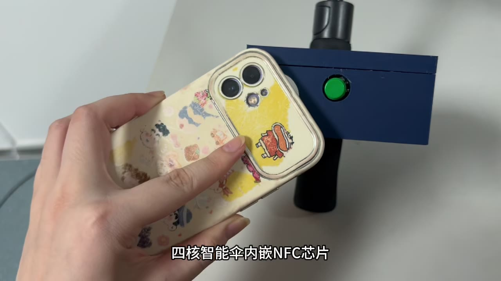

Challenge
Umbrellas are easy to lose. The device had to locate the umbrella beyond Bluetooth range, detect unwanted movement and fit on the handle.
Mechatronics team project · Coursework → competition entry
An Arduino umbrella that can be located remotely, sounds an alarm when moved, helps a finder return it and lights up after dark.
Umbrellas are easy to lose. The device had to locate the umbrella beyond Bluetooth range, detect unwanted movement and fit on the handle.
Selected and sourced the hardware, tested NFC tag writing, iterated the lighting layout and 3D-printed enclosure, and edited the demo video and report.
A working prototype that uploads GPS position over 4G, with an accelerometer alarm, NFC owner tag and illuminated edge, later refined into a competition entry.
| Problem | Fix |
|---|---|
| Weak GPS reception | Replaced the ceramic antenna with an active antenna |
| GPS and 4G serial conflicts | Separated them with an expansion board and software serial |
| False movement alarms | Configurable acceleration threshold and button debouncing |
| Finder cannot contact owner | Owner details written to an editable NFC tag |

Requirements, tracking options, integration and testing.
One-page overview of the prototype.
The later family-use competition entry.
Credits: Team project. Firmware, server code, videos and documents were produced together with my teammates; my individual contribution is listed above.